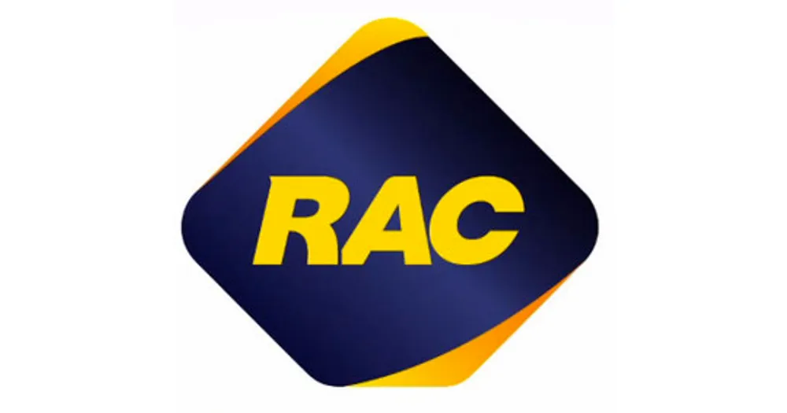

Hey There!
Welcome!
I'm a strategic thinker with a solid background in digital marketing and communications. I get a kick out of diving into creative projects and enhancing user experiences through genuine communication. My track record? Successfully spearheading projects across social, web, video, and radio.
I'm all about making sure projects hit the mark on scope, time, and budget, along with key performance indicators. Thanks to my top-notch communication and project management skills, I'm a pro at building and maintaining strong relationships with stakeholders. Oh, and by the way, I'm neurodivergent – dealing with the unique flavor of ADHD since '99!
Thanks to the following organisations for their assistance:
